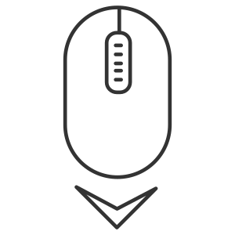
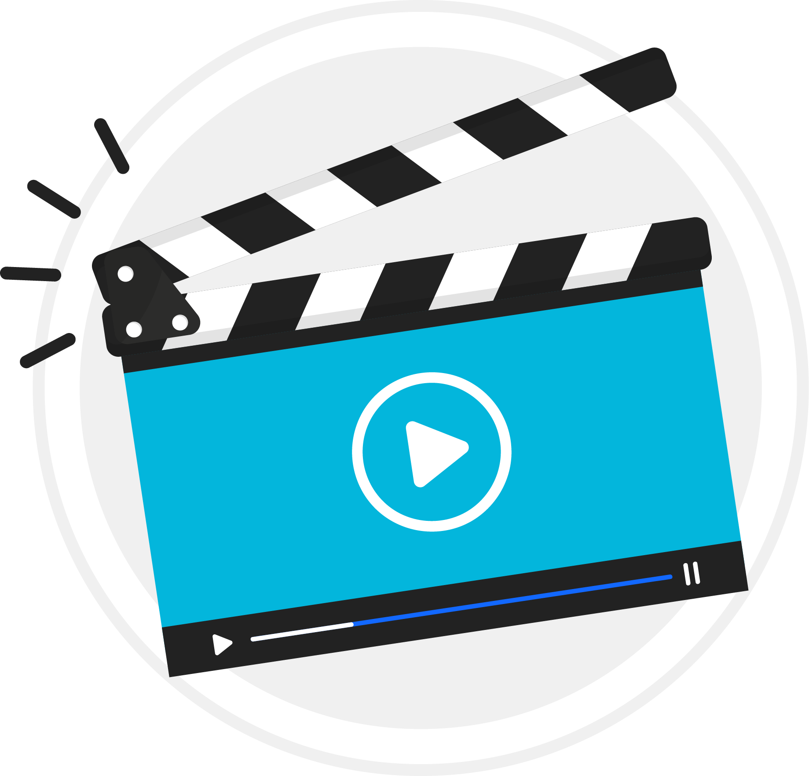

Prevención y atención del Burnout
y Bienestar Laboral
Guía de Navegación
Antes de comenzar, familiarízate con los controles del curso:
Menú: Accede a las unidades del curso.
Navegación: Avanza o retrocede entre pantallas.
Interactividad: Haz clic donde veas este icono.
Progreso: Visualiza tu avance en el curso.

Scroll: Si ves este icono, desliza hacia abajo para ver más contenido.
Presentación
Bienvenido/a al curso
Prevención y atención del Burnout y Bienestar Laboral.
Revisa el siguiente video para saber en qué consiste.

¡Muy bien! Puedes hacer clic en Avanzar.
Ruta de Aprendizaje
Cuidar nuestro bienestar es esencial para mantener nuestra salud y un sano desempeño. Prevenir y atender el burnout nos permite construir entornos laborales más equilibrados, humanos y productivos. ¿Qué vas a aprender en esta nueva experiencia de aprendizaje? Revisa la siguiente infografía para que conozcas la ruta que seguirás.
Unidad 1
Comprendiendo el Burnout
Haz clic en avanzar.
1. Comprendiendo el Burnout
En esta unidad aprenderás
El mundo laboral actual es dinámico, demandante y, en muchas ocasiones, acelerado. Esto puede impulsarnos a crecer y aprender, pero también puede llevarnos a un punto donde la exigencia constante supera nuestra capacidad de recuperación. Cuando esto ocurre de forma sostenida, puede aparecer un fenómeno conocido como burnout o agotamiento laboral.
1.1. ¿Qué es el Burnout?
1.1. ¿Qué es el Burnout?
De acuerdo con la Organización Mundial de la Salud, el burnout es el síndrome resultante del estrés crónico en el trabajo que no se ha manejado con éxito. Como tal se conceptualiza como un fenómeno ocupacional, y no en el contexto de otros ámbitos de la vida.
- No es "estar cansado" después de una semana intensa.
- Es el resultado de estrés crónico en el trabajo que no se ha gestionado adecuadamente.
- Se manifiesta con cansancio extremo, distanciamiento emocional del trabajo y una sensación creciente de bajo rendimiento.
- Reconocerlo a tiempo es fundamental para cuidar nuestra salud, mantener relaciones laborales positivas y asegurar un desempeño sostenible.
1.2. Etapas del agotamiento laboral
1.2. Etapas del agotamiento laboral
A continuación, revisaremos las etapas del agotamiento laboral de acuerdo con el modelo de Maslach y Jackson, quienes conceptualizan el síndrome de Burnout como un proceso multidimensional que va evolucionando a través del tiempo, aunque no siempre de forma completamente lineal.
Es el primer síntoma de que la persona está lidiando con exceso de demandas laborales y recursos insuficientes para hacerles frente. Sus señales típicas son:
- "Me siento fatigado/a al levantarme."
- "Termino el día sin energía."
- "Parece que ya nada me recarga."
En esta fase, la persona, con el apoyo de su líder, aún puede lidiar y evitar avanzar al siguiente nivel.
Una vez que el agotamiento persiste, la persona empieza a "desconectarse" emocionalmente del trabajo, de sus tareas y de sus compañeros. Aparece una actitud de distanciamiento, apatía: "ya no me importa tanto", "esto no vale la pena".
La desconexión comienza a afectar la colaboración, la innovación y el clima laboral, y la persona ya no es "embajadora" sino "sobreviviente" del trabajo. Aquí es clave que el colaborador y su líder detecten que la persona no solo está cansada, sino que su vínculo con el rol y el equipo está menguando.
En esta fase la persona siente que: "no rindo como antes", "no logro lo que debería", "mi trabajo no tiene impacto", "me cuesta concentrarme y tomar decisiones".
Siente que hay mayor retrabajo, falta de calidad, frustración, y el riesgo de salida del puesto, absentismo o sanciones. Esta fase indica que el burnout está avanzado y que se necesitan acciones más estructurales, tanto a nivel de la organización como en el enfoque individual.
Algunos autores amplían el modelo a una cuarta fase donde la
persona ya opera en piloto automático, se desvincula totalmente y tiene alto riesgo de
rotación, colapso o enfermedad.
Aunque Maslach y Jackson enfatizan las tres dimensiones,
la mayoría de los programas de intervención reconocen esta fase. Si bien queremos
prevenir antes de llegar aquí, es útil conocerla para reconocer que un colaborador puede
necesitar apoyo urgente.
Es el primer síntoma de que la persona está lidiando con exceso de demandas laborales y recursos insuficientes para hacerles frente. Sus señales típicas son:
- "Me siento fatigado/a al levantarme."
- "Termino el día sin energía."
- "Parece que ya nada me recarga."
En esta fase, la persona, con el apoyo de su líder, aún puede lidiar y evitar avanzar al siguiente nivel.
Una vez que el agotamiento persiste, la persona empieza a "desconectarse" emocionalmente del trabajo, de sus tareas y de sus compañeros. Aparece una actitud de distanciamiento, apatía: "ya no me importa tanto", "esto no vale la pena".
La desconexión comienza a afectar la colaboración, la innovación y el clima laboral, y la persona ya no es "embajadora" sino "sobreviviente" del trabajo. Aquí es clave que el colaborador y su líder detecten que la persona no solo está cansada, sino que su vínculo con el rol y el equipo está menguando.
En esta fase la persona siente que: "no rinde como antes", "no logro lo que debería", "mi trabajo no tiene impacto", "me cuesta concentrarme y tomar decisiones".
Siente que hay mayor retrabajo, falta de calidad, frustración, y el riesgo de salida del puesto, absentismo o sanciones. Esta fase indica que el burnout está avanzado y que se necesitan acciones más estructurales, tanto a nivel de la organización como en el enfoque individual.
Algunos autores amplían el modelo a una cuarta fase donde la persona ya opera en piloto automático, se desvincula totalmente y tiene alto riesgo de rotación, colapso o enfermedad. Aunque Maslach y Jackson enfatizan las tres dimensiones, la mayoría de los programas de intervención reconocen esta fase. Si bien queremos prevenir antes de llegar aquí, es útil conocerla para reconocer que un colaborador puede necesitar apoyo urgente.
1.3. Diferencia entre estrés y burnout
1.3. Diferencia entre estrés y burnout
Aunque a veces son mencionados como lo mismo, la realidad es que hay diferencias entre el estrés y el burnout.
El estrés es una respuesta a demandas elevadas y puede ser temporal; bien gestionado, incluso puede impulsar el desempeño por periodos cortos.
El burnout es la cronificación del estrés laboral sin manejo eficaz y con deterioro en la energía, el vínculo con el trabajo y la eficacia. Suele estar precedido por episodios repetidos de estrés.
| Característica | Estrés | Burnout |
|---|---|---|
| Temporalidad | Generalmente de corta o media duración | Sostenido, crónico, sin recuperación adecuada |
| Estado de ánimo | Activo, movilizado ("vamos a resolverlo") | Pérdida de motivación, sensación de "ya no puedo" |
| Emoción asociada | Ansiedad, irritabilidad, tensión | Apatía, desapego, vacío emocional |
| Rendimiento | Puede mantenerse o incluso mejorar momentáneamente | Disminuye claramente con el tiempo |
| Recuperación | Un descanso o fin de semana pueden ayudar | Las pausas no bastan; se necesita cambio estructural |
| Ámbito | Responde a demandas específicas o puntuales | Relacionado con condiciones persistentes del trabajo |
| Implicación para el trabajo | Participación activa, implicación normal | Desconexión, labor cumplida "por trámite" |
El estrés es una respuesta a demandas elevadas y puede ser temporal; bien gestionado, incluso puede impulsar el desempeño por periodos cortos.
El burnout es la cronificación del estrés laboral sin manejo eficaz y con deterioro en la energía, el vínculo con el trabajo y la eficacia. Suele estar precedido por episodios repetidos de estrés.
| Característica | Estrés | Burnout |
|---|---|---|
| Temporalidad | Generalmente de corta o media duración | Sostenido, crónico, sin recuperación adecuada |
| Estado de ánimo | Activo, movilizado ("vamos a resolverlo") | Pérdida de motivación, sensación de "ya no puedo" |
| Emoción asociada | Ansiedad, irritabilidad, tensión | Apatía, desapego, vacío emocional |
| Rendimiento | Puede mantenerse o incluso mejorar momentáneamente | Disminuye claramente con el tiempo |
| Recuperación | Un descanso o fin de semana pueden ayudar | Las pausas no bastan; se necesita cambio estructural |
| Ámbito | Responde a demandas específicas o puntuales | Relacionado con condiciones persistentes del trabajo |
| Implicación para el trabajo | Participación activa, implicación normal | Desconexión, labor cumplida "por trámite" |
1.4. Consecuencias del Burnout en la salud y el rendimiento
1.4. Consecuencias del Burnout
Cuando el agotamiento laboral se instala, sus efectos pueden sentirse tanto en nuestro cuerpo y mente, como en la forma en que trabajamos y colaboramos. A continuación, identifica sus señales para que puedas actuar antes de que se agraven.
- Cansancio constante: ya no es "hoy estoy cansado", sino "todos los días me siento sin energía", incluso al levantarme.
- Emociones más pesadas: sentirse inútil, bajo de ánimo, menor interés por colaborar o conectar con compañeros o clientes. Esto puede evolucionar hacia ansiedad o depresión si no se atiende.
- Problemas de sueño: dificultad para conciliar el sueño, despertarse a mitad de la noche o no sentirse descansado al despertar.
- Irritabilidad o seguir el día a día sin ganas: mostrar apatía, responder de forma más seca, perder interés por cosas que antes motivaban.
- Síntomas físicos varios: dolores de cabeza, cuello o espalda, trastornos digestivos, palpitaciones o tensión muscular, que ya no se relacionan sólo con una semana pesada.
- Menor calidad en las tareas: se cometen más errores, se vuelve más difícil revisar el trabajo, los tiempos se alargan.
- Menor productividad real: aunque estés en la oficina u horas conectadas, el rendimiento efectivo puede caer. Lo que producías con 100% ahora quizá sea 60-70%.
- Retrabajo y efectos en equipo/cliente: el equipo tiene que esperar más, los clientes internos/externos lo sienten, los resultados bajan, la reputación del área puede verse afectada.
- Desmotivación o desconexión: "ya no me importa tanto este proyecto", "¿para qué me esfuerzo si no cambia nada?". Esto reduce el entusiasmo y la iniciativa.
- Mayor riesgo para la empresa… y para ti: puede aumentar el ausentismo o que busques otro empleo. Para la empresa significa más costos, menor calidad y menor compromiso; para ti, más estrés, más carga emocional, menos satisfacción.
Porque no sólo es un mal rato, es un problema que puede escalar: un bajo rendimiento hoy puede derivar en:
- Incapacidad médica
- Renuncia
- Traslado forzoso
- Situación de salud grave mañana
Porque si actúas temprano, puedes recuperar bienestar, motivación y rendimiento. Como dice la normativa NOM-035-STPS-2018, es responsabilidad compartida: tanto tú como la empresa pueden hacer ajustes para que esto no siga empeorando.
- Cansancio constante: ya no es "hoy estoy cansado", sino "todos los días me siento sin energía", incluso al levantarme.
- Emociones más pesadas: sentirse inútil, bajo de ánimo, menor interés por colaborar o conectar con compañeros o clientes. Esto puede evolucionar hacia ansiedad o depresión si no se atiende.
- Problemas de sueño: dificultad para conciliar el sueño, despertarse a mitad de la noche o no sentirse descansado al despertar.
- Irritabilidad o seguir el día a día sin ganas: mostrar apatía, responder de forma más seca, perder interés por cosas que antes motivaban.
- Síntomas físicos varios: dolores de cabeza, cuello o espalda, trastornos digestivos, palpitaciones o tensión muscular, que ya no se relacionan sólo con una semana pesada.
- Menor calidad en las tareas: se cometen más errores, se vuelve más difícil revisar el trabajo, los tiempos se alargan.
- Menor productividad real: aunque estés en la oficina u horas conectadas, el rendimiento efectivo puede caer. Lo que producías con 100% ahora quizá sea 60-70%.
- Retrabajo y efectos en equipo/cliente: el equipo tiene que esperar más, los clientes internos/externos lo sienten, los resultados bajan, la reputación del área puede verse afectada.
- Desmotivación o desconexión: "ya no me importa tanto este proyecto", "¿para qué me esfuerzo si no cambia nada?". Esto reduce el entusiasmo y la iniciativa.
- Mayor riesgo para la empresa… y para ti: puede aumentar el ausentismo o que busques otro empleo. Para la empresa significa más costos, menor calidad y menor compromiso; para ti, más estrés, más carga emocional, menos satisfacción.
Porque no sólo es un mal rato, es un problema que puede escalar: un bajo rendimiento hoy puede derivar en:
- Incapacidad médica
- Renuncia
- Traslado forzoso
- Situación de salud grave mañana
Porque si actúas temprano, puedes recuperar bienestar, motivación y rendimiento. Como dice la normativa NOM-035-STPS-2018, es responsabilidad compartida: tanto tú como la empresa pueden hacer ajustes para que esto no siga empeorando.
Ejercicio
Unidad 2
Identificación de señales y factores de riesgo
Haz clic en avanzar.
UNIDAD 2 · Identificación de señales y factores de riesgo
Identificación de señales y factores de riesgo
El Burnout no es un fallo personal. Es una señal de que algo en el diseño del trabajo o en los hábitos debe ajustarse.
2.1. Señales emocionales, cognitivas y conductuales
2.1. Señales emocionales, cognitivas y conductuales
El Burnout no aparece de un día para otro. Antes envía señales en nuestro comportamiento, estado de ánimo y rendimiento. Detectarlas temprano es clave para cuidarnos.
- Dificultad para concentrarse o tomar decisiones.
- Memoria dispersa o frecuentes olvidos.
- Pensamientos negativos: "ya no rindo", "no soy suficiente".
- Sentir que el esfuerzo ya no vale la pena.
- Irritabilidad o mal humor constante.
- Tristeza, desánimo o sensación de vacío.
- Pérdida de motivación y entusiasmo por el trabajo.
- Sensación de estar "al límite".
- Menor interés en convivir con el equipo o participar.
- Retrasar entregas o hacer solo lo mínimo.
- Aumentar el consumo de café, cigarros o comida rápida para "aguantar".
- Alejarse del equipo, evitar llamadas o cámaras en reuniones.
- Micro-ausentismo: llegar tarde, salir antes, "desconectarse" durante la jornada.
- Menor cuidado en la calidad del trabajo.
- Dificultad para concentrarse o tomar decisiones.
- Memoria dispersa o frecuentes olvidos.
- Pensamientos negativos: "ya no rindo", "no soy suficiente".
- Sentir que el esfuerzo ya no vale la pena.
- Irritabilidad o mal humor constante.
- Tristeza, desánimo o sensación de vacío.
- Pérdida de motivación y entusiasmo por el trabajo.
- Sensación de estar "al límite".
- Menor interés en convivir con el equipo o participar.
- Retrasar entregas o hacer solo lo mínimo.
- Aumentar el consumo de café, cigarros o comida rápida para "aguantar".
- Alejarse del equipo, evitar llamadas o cámaras en reuniones.
- Micro-ausentismo: llegar tarde, salir antes, "desconectarse" durante la jornada.
- Menor cuidado en la calidad del trabajo.
UNIDAD 2 · Identificación de señales y factores de riesgo
2.2. Factores laborales y personales que lo desencadenan
El Burnout emerge cuando las demandas
del trabajo como la carga, presión temporal, conflictos de rol e interrupciones superan de forma
crónica los recursos, como la autonomía, apoyo del líder y del equipo, claridad,
retroalimentación, reconocimiento.
Algunos factores laborales que lo desencadenan pueden ser:
Cargas excesivas y picos crónicos, plazos irreales, "urgencias" continuas.
Ambigüedad o conflicto de rol, prioridades cambiantes sin criterios.
Poco control / autonomía para organizar el trabajo y los tiempos de concentración.
Liderazgo y comunicación deficientes (feedback sólo correctivo, trato hostil).
Falta de reconocimiento y de retroalimentación clara.
Interferencia trabajo-vida (mensajes fuera de horario como regla).
Cargas excesivas y picos crónicos, plazos irreales, "urgencias" continuas.
Ambigüedad o conflicto de rol, prioridades cambiantes sin criterios.
Poco control / autonomía para organizar el trabajo y los tiempos de concentración.
Liderazgo y comunicación deficientes (feedback sólo correctivo, trato hostil).
Falta de reconocimiento y de retroalimentación clara.
Interferencia trabajo-vida (mensajes fuera de horario como regla).
UNIDAD 2 · Identificación de señales y factores de riesgo
Unidad 3
Estrategias personales de prevención
Haz clic en avanzar.
Unidad 3. Estrategias personales de prevención
3. Estrategias personales de prevención
Es importante que cada colaborador desarrolle herramientas reales y aplicables para prevenir y manejar el agotamiento laboral dentro del entorno de oficina: cargas de trabajo, alta conectividad, múltiples reuniones, presión por resultados y cambios constantes.
El autocuidado no es un lujo.
Es una condición para seguir rindiendo.
Unidad 3. Estrategias personales de prevención
3.1. Acciones de autocuidado
El trabajo en oficina puede implicar sedentarismo, multitarea y exigencias cognitivas que consumen energía más rápido de lo que se recupera. A continuación, revisa algunos ejemplos de autocuidado y micro acciones que puedes poner en práctica de inmediato.
En oficina solemos estar sentados 6–10 horas, con snacks rápidos y alta tensión muscular. Para contrarrestar esta situación:
- Cambia de postura o realiza estiramientos de cuello y hombros cada 60–90 minutos.
- Bebe agua constantemente.
- Oblígate a levantarte cada determinado tiempo.
- Come lejos del escritorio (evita mezclar trabajo y descanso).
Se trata de gestionar cómo nos sentimos y evitar que el estrés se vuelva crónico. Ejemplos claros en oficina:
- Después de una junta tensa, toma 3 minutos para respirar en lugar de "brincar" directo a otra reunión.
- Pide aclaraciones cuando la retro sea confusa, para evitar frustración acumulada.
- Practica la gratitud laboral: reconoce algo positivo del día antes de cerrar la computadora.
El trabajo remoto o híbrido puede generar aislamiento sin que nos demos cuenta. Algunas acciones que pueden ayudarte son:
- Conectar con un colega 10 minutos al día para compartir avances o dudas.
- Participar activamente en una reunión al menos una vez: una pregunta o propuesta.
- Salir a comer con el equipo una vez cada dos semanas.
En oficina solemos estar sentados 6–10 horas, con snacks rápidos y alta tensión muscular. Para contrarrestar esta situación:
- Cambia de postura o realiza estiramientos de cuello y hombros cada 60–90 minutos.
- Bebe agua constantemente.
- Oblígate a levantarte cada determinado tiempo.
- Come lejos del escritorio (evita mezclar trabajo y descanso).
Se trata de gestionar cómo nos sentimos y evitar que el estrés se vuelva crónico. Ejemplos claros en oficina:
- Después de una junta tensa, toma 3 minutos para respirar en lugar de "brincar" directo a otra reunión.
- Pide aclaraciones cuando la retro sea confusa, para evitar frustración acumulada.
- Practica la gratitud laboral: reconoce algo positivo del día antes de cerrar la computadora.
El trabajo remoto o híbrido puede generar aislamiento sin que nos demos cuenta. Algunas acciones que pueden ayudarte son:
- Conectar con un colega 10 minutos al día para compartir avances o dudas.
- Participar activamente en una reunión al menos una vez: una pregunta o propuesta.
- Salir a comer con el equipo una vez cada dos semanas.
3.2. Gestión del tiempo y priorización saludable
3.2. Gestión del tiempo y priorización saludable
Cuando todo es urgente, la mente trabaja en modo incendio y se desgasta el doble. El agotamiento laboral surge, muchas veces, porque confundimos estar ocupados con ser productivos.
Gestionar el tiempo no significa llenar la agenda, sino equilibrar demandas, prioridades y energía. Una buena administración del tiempo reduce la sensación de caos, evita el multitasking extremo y previene que el trabajo invada el espacio personal.
3.2. Gestión del tiempo y priorización saludable
Una herramienta poderosa para ayudarte es la Matriz de Eisenhower, que clasifica las tareas según su urgencia e importancia:
Matriz de Eisenhower
Tareas que tienen alta prioridad
¡Hazla ya!
Tareas que no son urgentes
Planifícalas para luego
Tareas poco relevantes
Puedes delegarlas
Tareas que no son importantes, ni urgentes
Ignóralas
Primero, identifica lo urgente y distínguelo de lo importante.
Al finalizar la ubicación de tus tareas y responsabilidades en la matriz, al inicio del día (o la noche anterior), define las tres prioridades clave de acuerdo con:
- Lo que impacta resultados del negocio.
- Lo que evita problemas mayores.
- Lo que contribuye a tu bienestar o desarrollo.
Luego, agenda tu día alrededor de esas tres metas, dejando espacios para imprevistos. Por ejemplo:
- 09:00 – 10:30 · Análisis de ventas trimestrales (meta del área).
- 11:00 – 12:00 · Revisión con el equipo (previene errores).
- 16:30 – 17:00 · Capacitación breve o lectura (crecimiento personal).
3.2. Gestión del tiempo y priorización saludable
Evita el multitasking
Hacer varias tareas a la vez no ahorra tiempo, sino que aumenta los errores y el cansancio mental. Cada cambio de tarea exige al cerebro reiniciar el contexto, lo que gasta energía y reduce el rendimiento.
Responder correos mientras estás en una reunión de seguimiento. Terminas sin escuchar del todo ni responder con calidad.
- Dedica bloques de enfoque total (60–90 minutos).
- Luego, haz pausas cortas (5–10 minutos).
Este ciclo aumenta la concentración y disminuye el estrés.
3.2. Gestión del tiempo y priorización saludable
Aprovecha tus picos de productividad
- Considera que cada persona tiene picos de productividad distintos: algunos trabajan mejor en la mañana, otros después de comer.
- Aprende a observar tus momentos de máxima energía y reserva esos bloques para tareas complejas.
Por ejemplo, si tu mejor concentración es entre 9:00 y 11:00, evita agendar reuniones en ese rango. Usa ese tiempo para análisis, planeación o escritura.
3.2. Gestión del tiempo y priorización saludable
Concluyendo:
Ejercicio
3.3. Técnicas de relajación
3.3. Técnicas de relajación
En el ritmo acelerado del trabajo, entre correos, juntas, llamadas y plazos, el cuerpo y la mente entran en un estado de tensión constante.
Aunque no siempre lo notemos, los hombros se elevan, la respiración se vuelve corta y el cerebro se mantiene en "modo alerta" durante horas.
Practicar técnicas de relajación y mindfulness ayuda a interrumpir ese ciclo, liberar tensión acumulada y recuperar claridad mental para tomar mejores decisiones.
3.3. Técnicas de relajación
Mindfulness laboral
El mindfulness laboral o atención plena no significa "dejar de pensar", sino enfocar la mente en el momento presente: respirar, escuchar, observar y actuar con conciencia. Estas pausas conscientes mejoran la concentración, reducen errores y fortalecen la gestión emocional en situaciones de presión.
Descarga la infografía para aprender técnicas de respiración.
Descargar Infografía (PDF)Existen tres acciones concretas para aplicar en tus reuniones y reducir el agotamiento laboral:
- Respira profundo antes de hablar → mejora la claridad y el tono.
- Mira un punto fijo 3 segundos para relajar ojos y mente.
- Antes del cierre, agradece mentalmente un logro de la reunión.
| Duración | Técnica | Momento ideal |
|---|---|---|
| 30 seg. | Soltar hombros + exhalar profundo 3 veces. | Después de un mensaje tenso |
| 1 min | Respiración 4-4-6: inhala por la nariz 4 s; mantén el aire 4 s (sin tensión); exhala por la boca 6 s, vaciando por completo los pulmones. Repite de 4 a 6 veces. | Antes de presentar en junta |
| 3 min | Estiramiento en la estación de trabajo: estira brazos, piernas y cuello. | Entre videollamadas |
| 5 min | Música relajante o caminar: regálate pausas de 5 minutos caminando o con música que te relaje. | Después de un cierre complejo |
Existen tres acciones concretas para aplicar en tus reuniones y reducir el agotamiento laboral:
- Respira profundo antes de hablar → mejora la claridad y el tono.
- Mira un punto fijo 3 segundos para relajar ojos y mente.
- Antes del cierre, agradece mentalmente un logro de la reunión.
| Duración | Técnica | Momento ideal |
|---|---|---|
| 30 seg. | Soltar hombros + exhalar profundo 3 veces. | Después de un mensaje tenso |
| 1 min | Respiración 4-4-6: inhala por la nariz 4 s; mantén el aire 4 s (sin tensión); exhala por la boca 6 s, vaciando por completo los pulmones. Repite de 4 a 6 veces. | Antes de presentar en junta |
| 3 min | Estiramiento en la estación de trabajo: estira brazos, piernas y cuello. | Entre videollamadas |
| 5 min | Música relajante o caminar: regálate pausas de 5 minutos caminando o con música que te relaje. | Después de un cierre complejo |
3.4. Establecimiento de límites
3.4. Establecimiento de límites
Establecer límites saludables no significa falta de compromiso ni resistencia al cambio. Por el contrario, es una forma inteligente y profesional de proteger la energía, mantener la concentración y asegurar resultados sostenibles.
Un colaborador que sabe cuándo trabajar y cuándo desconectarse rinde mejor, se relaciona mejor y vive con mayor equilibrio.